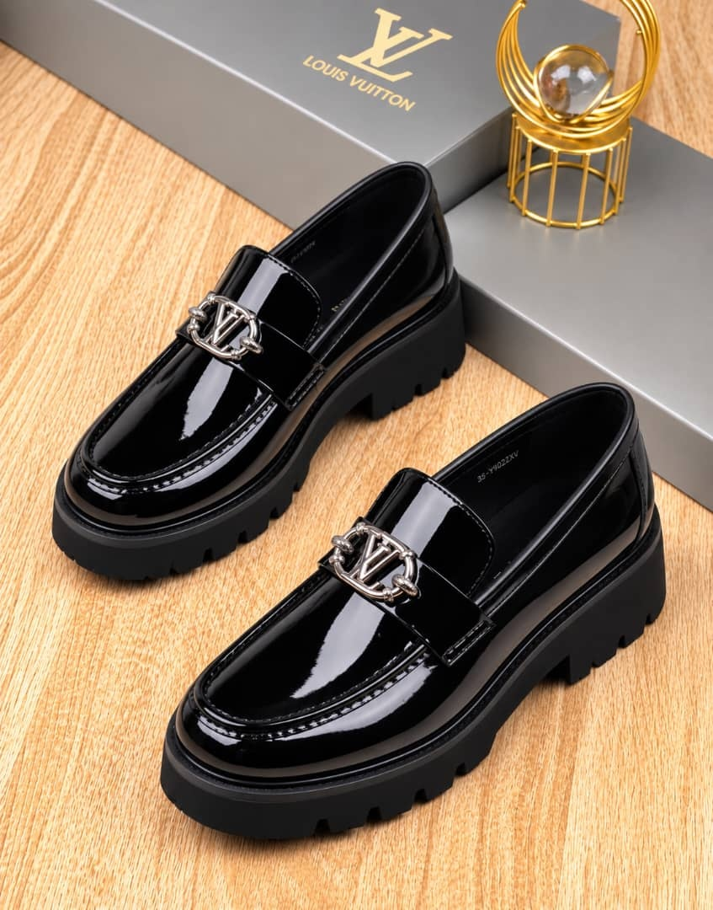
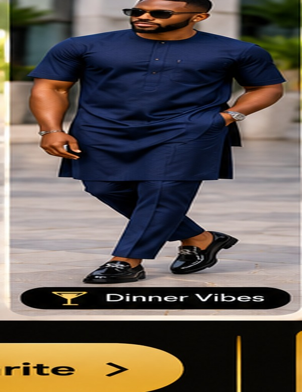

Casual Chic
Polo + tailored trousers

Five ways to style your Nashrite black patent loafer — from polished daytime dressing to evening confidence.
Your loafer is the statement piece. Keep the rest of the look clean, tailored and intentional.

This page is designed to become your customer's personal Nashrite styling destination.
The final QR will be generated only after the permanent page address is chosen, so the printed code can point directly to this customer page.